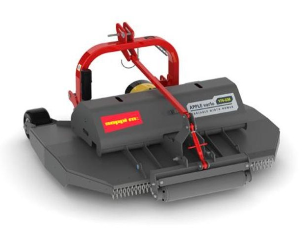
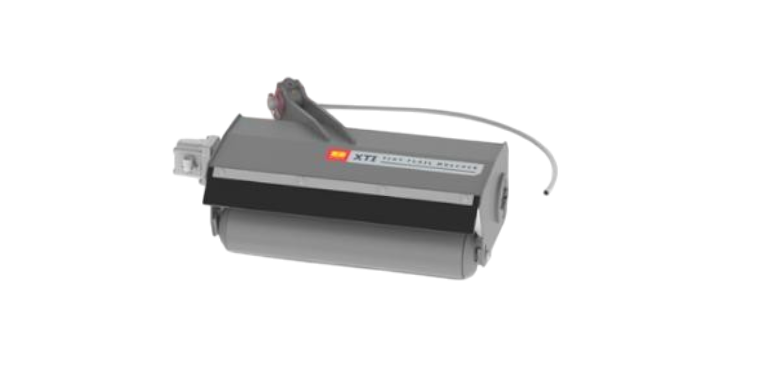
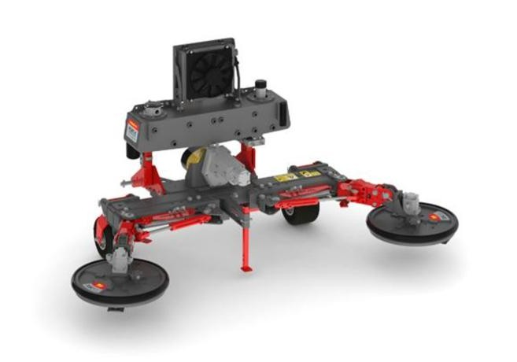

APPLE vario Cuchillas 40–90 CV
Ver características
- Ajuste rápido de ancho para el marco de plantación.
- Corte de hierba con proyección reducida.
- Para tractores de 40–90 CV.
Tritura hierba para trabajos en campos de fruta, viñedos y espacios verdes. También soluciones entre hileras bajo cultivo.



Mantenimiento preciso y seguro entre plantas.